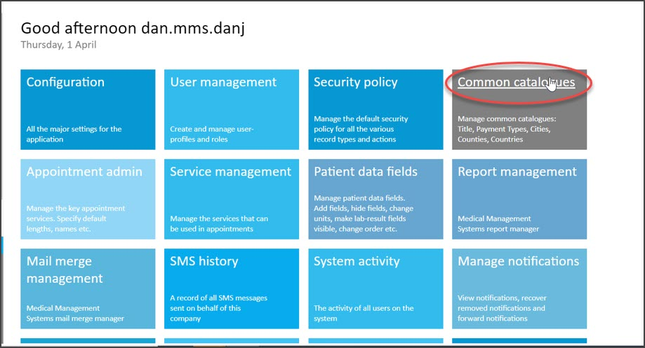
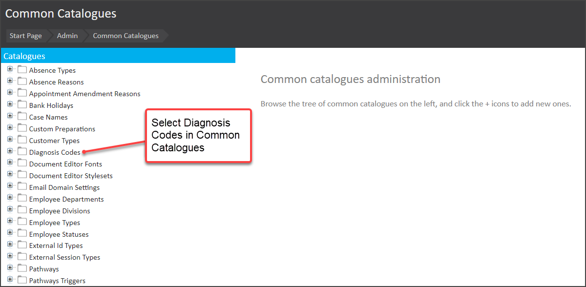
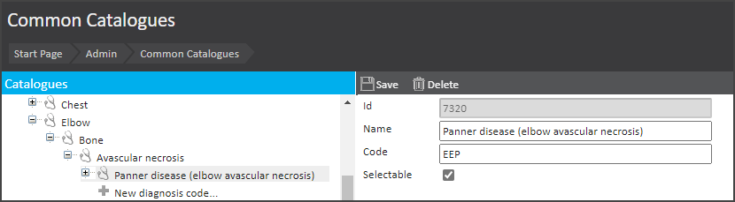

To support the selection of Invoice Diagnosis codes in a Clinical form on a Consultation, you need to do some configuration. This is done using Diagnosis Codes in the Common Catalogues list. However, since a new release in April 2021, it is now possible to create a hierarchy of ‘child’ codes for a parent code.
It is also possible to define: -
This article presents a walk-through of how to create a new Diagnosis Code to use in the Invoice Diagnosis list.
To create a new Diagnosis Code:-
1. From the Start page, select Admin 
2. Select Common Catalogues
3. Select Diagnosis Codes 
4. Where diagnosis codes already exist, navigate through the list
5. Select + New diagnosis code on the left
6. For the new diagnosis code
a. Add in a Name
b. Add in a Code
c. Where this code should be available for selection by a user, tick Selectable

7. Save the item
This Diagnosis code will now be available in the Invoice Diagnosis list.
It is possible to create an unlimited number of levels of diagnosis codes. In practice, you may want to consider the manageability of a highly hierarchical structure.
The process of editing an existing Diagnosis Code is very similar to that described above for creating a new Diagnosis Code.
To do this you:
1. Follow steps as described above up to where you arrive at Common Catalogues
2. Navigate through the existing Diagnosis Codes list
3. Select the existing item
4. Edit as required
5. Then Save the change.